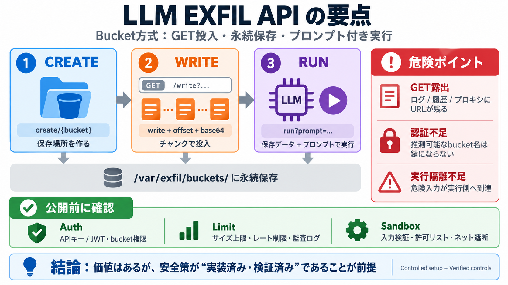

Crawl4AI - LLM Credential Exfiltration via base_url and Environment Variable Resolution | Advisories | VulnCheck
2026 1H State of Exploitation Report is live Learn More Sign In / Join Sign In Advisories ## Crawl4AI - LLM Credent…

2026 1H State of Exploitation Report is live Learn More Sign In / Join Sign In Advisories ## Crawl4AI - LLM Credent…
Not What You’ve Signed Up For: Compromising Real-World LLM Applications via Indirect Prompt Injection - Comprehensive se…
Novee’s AI pentesting agent is currently available in beta and the company will demonstrate the technology during RSA Co…
of the author who published the vulnerability. 5.2 Reported AI Security Vulnerabilities The literature review identified…
## Navigation Menu # dns-exfiltration ## Here are 22 public repositories matching this topic... ### Geeoon / DNS-Tunn…